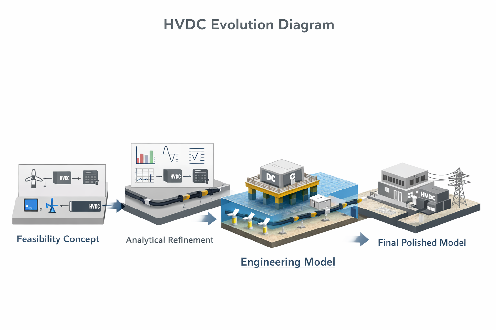

A visual and conceptual transformation from the foundational feasibility concept (v1) to the final polished engineering model (v4).
Hover to zoom. This diagram illustrates the complete transformation across all four versions.

Initial theoretical framework introducing HVDC for tidal systems.
Expanded analytical modeling, refined assumptions, and improved parameter definitions.
First full 3D engineering visualization showing turbines, subsea cable, and converter stations.
Consolidated refinements, corrected assumptions, and publication-ready engineering representation.